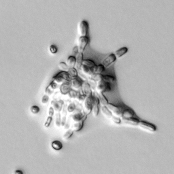

 |
|
Defining function. Genome sequencing and gene identification projects have and are providing a wealth of information. However, this information alone is insufficient to understand the living systems they encode. As a simple example, we have yet to assign biological function to many of the newly identified genes. Here a small number of yeast cells defective in one uncharacterized gene undergo filamentous-like growth triggered in response to a nitrogen deficient environment. Image courtesy of Alejandro Colman-Lerner. |